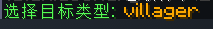
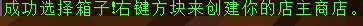

# 自己开商店
# 创建商店
- 首先你需要到服务器商店购买一个村民（见上一章节）

接下来需要准备一个箱子
把箱子放下来
并用手拿着村民蛋
这时候，聊天栏会有提示

首先，拿着村民蛋，对着天上按左键，选择到“交易商店”
（出售商店也行。不过不建议，因为交易商店包含出售商店的功能）

然后，再对着天上按住：shift+左键 选择你喜欢的商店生物
（建议villager或者牌子）

然后，对着箱子，拿着村民蛋，右键（绑定箱子）

然后在地上右键放出村民即可（生成商店）
# 商店管理
下面就是教程
1.交换商店
先把你的东西放进去箱子里面
对着你的商店，潜行+右键，进入管理页面

1可以修改商店名字（目前支持中文）
2是你所出售物品的库存数量
3是告示牌颜色
4为你要出售的商品（从你背包放进去）（左键增加数量，右键减少数量）
5为购买你的物品所需要的物品（在你背包放一个进去，但不会消耗你的背包物品） （左键增加数量，右键减少数量）
6为翻页
他人购买你的物品你就会获得你所需要的物品（放在商店箱子）
但同时你库存也会消耗

其次卖出的商品数量是不限 你也可以一直添加库存
接下里就可以经营你的小商店啦
2.交易商店
也是像上面一样. 但是放出来会为村民
Shift右键点开菜单编辑

1 2 6 7跟上面一样
3为体型.可以更改小村民与大村民
4是勋章（指村民胸前的等级）
8为村民职业
5为外表
他人购买你的物品你就会获得你所需要的物品
但同时你库存也会消耗

但是不同是你交易的物品需要放到旁边箱子里
其次在菜单编辑设定交易额（你要悄悄涨价.hhhh.）
物品随时可购买

最后大概就是这样了
初稿pooo，二次修改xiaoyu